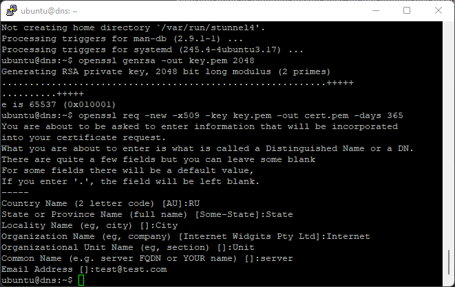

Настройка stunnel4 для работы с HTTP Injector
Подмена SNI при SSH-туннелировании через Stunnel на Raspbian/Debian
sudo.Устанавливаем stunnel4
sudo apt update sudo apt install stunnel4 -y
Генерируем приватный ключ и сертификат
Ключ и сертификат нужны stunnel для работы TLS-обёртки поверх SSH-соединения.
cd /etc/stunnel/ openssl genrsa -out key.pem 2048 openssl req -new -x509 -key key.pem -out cert.pem -days 365
Команда openssl req запросит данные сертификата (страна, организация и т.д.) — можно оставить значения по умолчанию, нажимая Enter.
Объединяем файлы для использования в программе
cat key.pem cert.pem >> /etc/stunnel/stunnel.pem

Редактируем конфиг
nano /etc/stunnel/stunnel.conf
Содержимое файла:
cert = /etc/stunnel/stunnel.pem client = no [ssh] accept = 1080 connect = 127.0.0.1:22
accept — порт, на который будет приходить трафик из HTTP Injector (не забудьте пробросить его через файрвол). connect — адрес и порт SSH-сервера на локальной машине, через который пойдёт интернет-трафик.
Запускаем stunnel4
/etc/init.d/stunnel4 start
Автозапуск stunnel4 через cron
Чтобы stunnel4 сам поднимался после перезагрузки устройства, добавим задание в crontab с меткой @reboot. Открываем crontab текущего пользователя (для запуска системной службы понадобится root, поэтому редактируем именно root-crontab):
sudo crontab -e
Если это первый запуск crontab, система спросит, каким редактором пользоваться — можно выбрать nano. В открывшийся файл в самый конец добавляем строку:
@reboot /etc/init.d/stunnel4 start
Сохраняем и закрываем редактор (в nano: Ctrl+O, Enter, Ctrl+X). Проверить, что задание сохранилось, можно командой:
sudo crontab -l
Теперь после каждой перезагрузки (например, после сбоя питания на Raspberry Pi) stunnel4 будет подниматься автоматически, без ручного запуска.
Настройка в HTTP Injector
В приложении выбираем метод SSL/TLS → SSH, указываем SNI, который не тарифицируется оператором, и параметры SSH-сервера:
- Метод
- SSL/TLS → SSH
- SNI
- gosuslugi.ru (или другой нетарифицируемый хост)
- SSH host
- IP-адрес сервера
- SSH port
- порт stunnel (accept из конфига, например 1080)
- Username / Password
- учётные данные SSH-пользователя